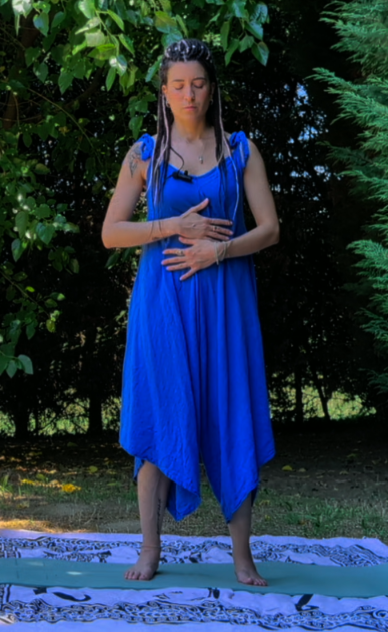
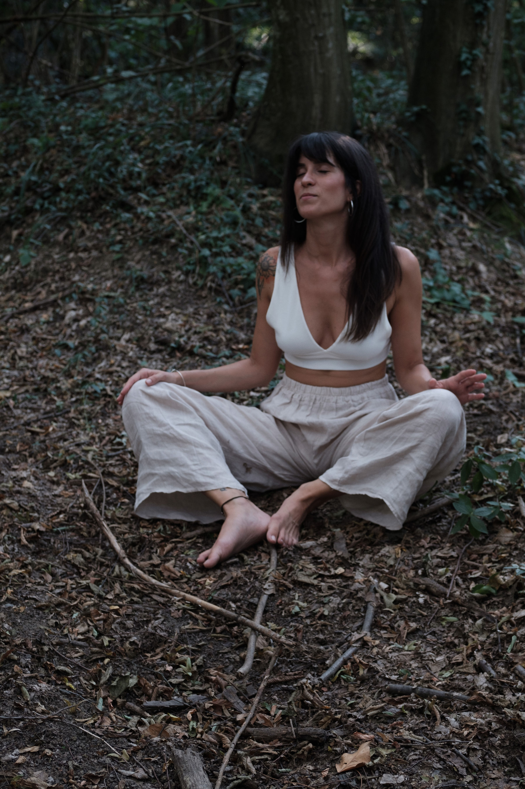

Ritrova coraggio, sicurezza e fiducia in te
Con un percorso personalizzato di 5 incontri che ti guida a vivere con maggiore libertà, comprendendo i segnali del tuo corpo e ascoltando le tue emozioni, senza tradirti di continuo ed avere paura di ferire chi ti sta vicino.
Scopri di più sul percorso
Risultati
Hai spesso gambe rigide o pesanti, tendi a gonfiarti facilmente e soffri di piedi freddi.
Vivi in allerta anche senza accorgertene, fai fatica a rilassarti e senti il bisogno di avere tutto sotto controllo. Ansia e paura possono limitarti anche nelle situazioni quotidiane.
Imparerai a riconoscere quando il corpo entra in allerta e a ritrovare maggiore stabilità e presenza, sentendoti più libero/a di fare esperienze che prima evitavi.
Percepisci rigidità nel bacino e tensione pelvica. Fai difficoltà a rilassare il corpo e lasciarti andare.
Ti concedi poco piacere, fai fatica a mollare il controllo o a vivere pienamente ciò che desideri. Questo può riflettersi anche nell'intimità e nella sessualità.
Ritroverai maggiore contatto con le sensazioni corporee e imparerai a concederti piacere, movimento, creatività e intimità con maggiore presenza.
Soffri di stomaco chiuso, addome e diaframma contratti. Vieni colpito/a da nausea o disturbi intestinali nei momenti di forte stress.
Dubiti di te, ti paragoni agli altri, rimandi, cerchi conferme fuori da te o senti di vivere con il “freno a mano tirato”.
Inizierai a fidarti maggiormente di ciò che senti e a mettere azione ai tuoi desideri, portando avanti progetti e facendo scelte più coerenti con te.
Percepisci peso o tensione al petto, il respiro è trattenuto portando spalle contratte e tensione nella parte alta della schiena.
Metti gli altri al primo posto, fai fatica a lasciar andare alcune relazioni, temi di deludere e rischi di caricarti di ciò che appartiene agli altri.
Imparerai a riconoscere ciò di cui hai bisogno, definire sani confini e vivere le relazioni senza dover continuamente mettere te in secondo piano.
Tendi a serrare la mandibola, percepisci tensione a collo e cervicale, nodo alla gola e mal di testa tensivo.
Trattieni ciò che senti, fai fatica a dire “no” o a esprimere rabbia, bisogni e limiti.
Comprenderai come dare spazio e voce a ciò che senti e a comunicarlo con maggiore chiarezza. I tuoi “sì” e i tuoi “no” diventeranno più autentici.
Per chi è
Hai difficoltà a portare avanti i progetti perché vivi con la convinzione di non sapere mai abbastanza.
Senti che il tuo lavoro non ti rispecchia più o senti di meritare di più dalla vita, ma non hai ancora una nuova direzione.
Non ti credi abbastanza forte, attiri sempre lo stesso tipo di persone e non riesci a canalizzare al meglio la tua energia maschile o femminile.
Assorbi le emozioni degli altri senza accorgertene e ti senti sempre sopraffatta/o.
Fai difficoltà a stare in posti affollati, viaggiare o vivere in libertà e leggerezza l’intimità.
Ti confronti continuamente con gli altri, hai alta autocritica e difficoltà a riconoscere le tue qualità.
Feedback
Con Aurora ho seguito il percorso individuale: avevo già fatto molti passi avanti con tutti i corsi di formazione precedenti, ma mancava ancora qualcosa...portare a terra i miei progetti, concretizzarli e Aurora mi ha spiegato che probabilmente il mio corpo era ancora fermo alla mia versione precedente ed era ciò che bloccava poi la realizzazione completa...ed era così! I primi risultati si sono già dalla 2a seduta!
M. R. — Affiancamento 1:1
Ho scelto di iniziare un percorso individuale con Aurora in un momento di confusione e trasformazione della mia vita. Mi ero reso conto che diversi aspetti, sia personali che lavorativi, non mi soddisfavano più, ma non riuscivo a capire da dove partire per cambiare qualcosa. Nel corso di cinque incontri, ho acquisito maggiore chiarezza, sicurezza e consapevolezza. Ho ritrovato fiducia nel futuro e ho imparato a considerare la mia sensibilità non come una debolezza, ma come una risorsa importante che mi appartiene.
A. O. — Affiancamento 1:1
Ciao Aurora, volevo dirti che per quanto riguarda il percorso 1:1… ho deciso di intraprenderlo! Ero un po' scettico all'inizio ma dopo i benefici del primo incontro e soprattutto la raccomandazione del mio psichiatra, che mi fa: se ti ha fatto del bene non può che giovarti !!! Ho cambiato idea. Grazie per il lavoro che hai fatto finora.
A. M. — Affiancamento 1:1
Chi ti accompagna

Guida Olistica per Anime Ribelli.
Mi prendo cura delle persone da 11 anni, inizialmente attraverso il benessere ed il massaggio e successivamente attraverso la connessione con il corpo, il sistema nervoso e le emozioni.
Oggi accompagno le persone a conoscere e comprendere il proprio corpo, imparando a riconoscerne i segnali, sciogliere ciò che le blocca e riscoprire risorse e potenzialità che spesso non sanno di avere.
Nel mio percorso unisco teoria e pratica, perché credo che conoscere come funzioniamo sia fondamentale, ma che il vero cambiamento avvenga quando ciò che comprendiamo può essere sperimentato e integrato nel corpo.
L'obiettivo è imparare a fidarsi sempre di più di sé, del proprio sentire e delle proprie risorse, per vivere ed esprimersi con maggiore sicurezza, libertà e consapevolezza.
11
Anni di esperienza
+20
Persone accompagnate
+11k
Corpi toccati
Il percorso
Molte persone che si sentono “deboli” o stanche, in realtà sono rimaste troppo a lungo in uno stato di stress, pressione o dolore emotivo. Quando inizi a lavorare partendo dal corpo, qualcosa cambia: smetti di combattere ciò che senti e inizi finalmente ad ascoltarti davvero.
Ritorna al tuo Corpo è un percorso individuale di ascolto e consapevolezza che parte da un obiettivo concreto che vuoi affrontare nella tua vita.
Quell'obiettivo diventerà il filo conduttore delle 5 tappe.
Partendo dal corpo, esploreremo insieme le emozioni, gli automatismi e le strategie che possono entrare in gioco rispetto a ciò che stai vivendo, attraverso tecniche di respirazione, meditazione, movimento corporeo e rilascio somatico.
Non per lavorare su “tutto”, ma per andare in profondità su ciò che in questo momento sta limitando maggiormente la tua libertà.
All'inizio del percorso definiamo insieme l'obiettivo su cui desideri lavorare.
I 5 incontri individuali, della durata di circa 90 minuti, vengono fissati ogni 15 giorni, così da avere tra una tappa e l'altra il tempo per osservare, sperimentare e integrare nella quotidianità ciò che emerge.
Dopo ogni incontro riceverai esercizi, pratiche di consapevolezza, meditazioni guidate o altri strumenti, che ti accompagneranno ad integrare nella vita quotidiana il lavoro svolto insieme.
E il percorso non si interrompe quando termina l'incontro: tra una tappa e l'altra potrai confrontarti con me tramite chat WhatsApp e, quando necessario, avremo a disposizione una chiamata di supporto di 30 minuti.
Perché il percorso non accade soltanto durante i nostri incontri: prende forma nella tua vita quotidiana.
Inclusi nel corso
Per capire se è il percorso adatto a te.
Attraverso whatsapp per condividere domande, difficoltà, intuizioni e progressi durante tutto il percorso.
Dopo ogni incontro riceverai esercizi, pratiche di consapevolezza, meditazioni guidate o altri strumenti, che ti accompagneranno ad integrare nella vita quotidiana il lavoro svolto insieme.
Attraverso una call di circa 30 min. fissata dopo una settimana dal termine del percorso per consolidare quanto appreso e accompagnarti nell'integrazione finale.
Scegli da dove iniziare
Domande frequenti